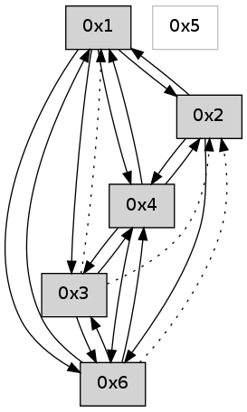

>> << IDX [start] -100 -25 -5 +0 +5 +25 +100 [560.168708086]
 Previous packets
----------------------------------------------------------------------
555.247631 beacon01(adaf) #0 coord=01,02,05,03,04,06 cycle=432.0ms assoc
-- color-indic=0 64 62 8f
555.257592 beacon02(adaf) #0 coord=01,02,05,03,04,06 cycle=432.0ms assoc 64 33 70
555.267593 beacon05(adaf) #0 coord=01,02,05,03,04,06 cycle=432.0ms assoc 64 95 5a
555.277593 beacon03(adaf) #0 coord=01,02,05,03,04,06 cycle=432.0ms assoc 64 09 7e
555.287594 beacon04(adaf) #0 coord=01,02,05,03,04,06 cycle=432.0ms assoc 64 af 54
555.297593 beacon06(adaf) #0 coord=01,02,05,03,04,06 cycle=432.0ms assoc 64 db 48
555.308700 [Hello(1): seq=254 sym=2,6,4 sysInfo= stat=2:14,0,0,0/6:3,0,0,0/4:11,0,0,0]
555.312942 [Hello(4): seq=355 sym=6,3,1,2 sysInfo= stat=6:4,0,0,0/3:13,0,0,0/1:10,0,0,0/2:0,0,0,0]
----------------------------------------------------------------------
555.739740 beacon01(adaf) #0 coord=01,02,05,03,04,06 cycle=432.0ms assoc
-- color-indic=0 64 a6 e0
555.749701 beacon02(adaf) #0 coord=01,02,05,03,04,06 cycle=432.0ms assoc 64 f7 1f
555.759701 beacon05(adaf) #0 coord=01,02,05,03,04,06 cycle=432.0ms assoc 64 51 35
555.769701 beacon03(adaf) #0 coord=01,02,05,03,04,06 cycle=432.0ms assoc 64 cd 11
555.779701 beacon04(adaf) #0 coord=01,02,05,03,04,06 cycle=432.0ms assoc 64 6b 3b
555.789702 beacon06(adaf) #0 coord=01,02,05,03,04,06 cycle=432.0ms assoc 64 1f 27
----------------------------------------------------------------------
556.231846 beacon01(adaf) #0 coord=01,02,05,03,04,06 cycle=432.0ms assoc
-- color-indic=0 64 ea 50
556.241810 beacon02(adaf) #0 coord=01,02,05,03,04,06 cycle=432.0ms assoc 64 bb af
556.251807 beacon05(adaf) #0 coord=01,02,05,03,04,06 cycle=432.0ms assoc 64 1d 85
556.261809 beacon03(adaf) #0 coord=01,02,05,03,04,06 cycle=432.0ms assoc 64 81 a1
556.271808 beacon04(adaf) #0 coord=01,02,05,03,04,06 cycle=432.0ms assoc 64 27 8b
556.281808 beacon06(adaf) #0 coord=01,02,05,03,04,06 cycle=432.0ms assoc 64 53 97
556.293237 [Hello(1): seq=255 sym=2,6,4 sysInfo= stat=2:15,0,0,0/6:3,0,0,0/4:12,0,0,0]
556.297138 [Hello(4): seq=356 sym=6,3,1,2 sysInfo= stat=6:4,0,0,0/3:13,0,0,0/1:10,0,0,0/2:0,0,0,0]
----------------------------------------------------------------------
556.723955 beacon01(adaf) #0 coord=01,02,05,03,04,06 cycle=432.0ms assoc
-- color-indic=0 64 2e 3f
556.733916 beacon02(adaf) #0 coord=01,02,05,03,04,06 cycle=432.0ms assoc 64 7f c0
556.743915 beacon05(adaf) #0 coord=01,02,05,03,04,06 cycle=432.0ms assoc 64 d9 ea
556.753916 beacon03(adaf) #0 coord=01,02,05,03,04,06 cycle=432.0ms assoc 64 45 ce
556.763916 beacon04(adaf) #0 coord=01,02,05,03,04,06 cycle=432.0ms assoc 64 e3 e4
556.773917 beacon06(adaf) #0 coord=01,02,05,03,04,06 cycle=432.0ms assoc 64 97 f8
----------------------------------------------------------------------
557.216062 beacon01(adaf) #0 coord=01,02,05,03,04,06 cycle=432.0ms assoc
-- color-indic=0 64 70 5e
557.226024 beacon02(adaf) #0 coord=01,02,05,03,04,06 cycle=432.0ms assoc 64 21 a1
557.236024 beacon05(adaf) #0 coord=01,02,05,03,04,06 cycle=432.0ms assoc 64 87 8b
557.246025 beacon03(adaf) #0 coord=01,02,05,03,04,06 cycle=432.0ms assoc 64 1b af
557.256024 beacon04(adaf) #0 coord=01,02,05,03,04,06 cycle=432.0ms assoc 64 bd 85
557.266025 beacon06(adaf) #0 coord=01,02,05,03,04,06 cycle=432.0ms assoc 64 c9 99
557.276817 [Hello(1): seq=256 sym=2,6,4 sysInfo= stat=2:0,0,0,0/6:3,0,0,0/4:13,0,0,0]
557.281358 [Hello(4): seq=357 sym=6,3,1,2 sysInfo= stat=6:4,0,0,0/3:14,0,0,0/1:10,0,0,0/2:0,0,0,0]
----------------------------------------------------------------------
557.708170 beacon01(adaf) #0 coord=01,02,05,03,04,06 cycle=432.0ms assoc
-- color-indic=0 64 b4 31
557.718130 beacon02(adaf) #0 coord=01,02,05,03,04,06 cycle=432.0ms assoc 64 e5 ce
557.728131 beacon05(adaf) #0 coord=01,02,05,03,04,06 cycle=432.0ms assoc 64 43 e4
557.738132 beacon03(adaf) #0 coord=01,02,05,03,04,06 cycle=432.0ms assoc 64 df c0
557.748134 beacon04(adaf) #0 coord=01,02,05,03,04,06 cycle=432.0ms assoc 64 79 ea
557.758132 beacon06(adaf) #0 coord=01,02,05,03,04,06 cycle=432.0ms assoc 64 0d f6
557.769791 [Hello(2): seq=852 sym=4,6,1 sysInfo= stat=4:12,0,0,0/6:0,0,0,0/1:6,0,0,0]
557.773510 [Hello(3): seq=357 sym=4,6 asym=2,1 sysInfo= stat=4:5,0,0,0/6:0,0,0,0/2:0,0,0,0/1:11,0,0,0]
----------------------------------------------------------------------
558.200277 beacon01(adaf) #0 coord=01,02,05,03,04,06 cycle=432.0ms assoc
-- color-indic=0 64 f8 81
558.210238 beacon02(adaf) #0 coord=01,02,05,03,04,06 cycle=432.0ms assoc 64 a9 7e
558.220239 beacon05(adaf) #0 coord=01,02,05,03,04,06 cycle=432.0ms assoc 64 0f 54
558.230238 beacon03(adaf) #0 coord=01,02,05,03,04,06 cycle=432.0ms assoc 64 93 70
558.240241 beacon04(adaf) #0 coord=01,02,05,03,04,06 cycle=432.0ms assoc 64 35 5a
558.250239 beacon06(adaf) #0 coord=01,02,05,03,04,06 cycle=432.0ms assoc 64 41 46
558.261934 [Hello(4): seq=358 sym=6,3,1,2 sysInfo= stat=6:5,0,0,0/3:15,0,0,0/1:10,0,0,0/2:0,0,0,0]
558.266303 [Hello(1): seq=257 sym=2,6,3,4 sysInfo= stat=2:1,0,0,0/6:3,0,0,0/3:0,0,0,0/4:14,0,0,0]
----------------------------------------------------------------------
558.692385 beacon01(adaf) #0 coord=01,02,05,03,04,06 cycle=432.0ms assoc
-- color-indic=0 64 3c ee
558.702346 beacon02(adaf) #0 coord=01,02,05,03,04,06 cycle=432.0ms assoc 64 6d 11
558.712345 beacon05(adaf) #0 coord=01,02,05,03,04,06 cycle=432.0ms assoc 64 cb 3b
558.722347 beacon03(adaf) #0 coord=01,02,05,03,04,06 cycle=432.0ms assoc 64 57 1f
558.732346 beacon04(adaf) #0 coord=01,02,05,03,04,06 cycle=432.0ms assoc 64 f1 35
558.742347 beacon06(adaf) #0 coord=01,02,05,03,04,06 cycle=432.0ms assoc 64 85 29
----------------------------------------------------------------------
559.184493 beacon01(adaf) #0 coord=01,02,05,03,04,06 cycle=432.0ms assoc
-- color-indic=0 64 71 e9
559.194454 beacon02(adaf) #0 coord=01,02,05,03,04,06 cycle=432.0ms assoc 64 20 16
559.204455 beacon05(adaf) #0 coord=01,02,05,03,04,06 cycle=432.0ms assoc 64 86 3c
559.214454 beacon03(adaf) #0 coord=01,02,05,03,04,06 cycle=432.0ms assoc 64 1a 18
559.224455 beacon04(adaf) #0 coord=01,02,05,03,04,06 cycle=432.0ms assoc 64 bc 32
559.234456 beacon06(adaf) #0 coord=01,02,05,03,04,06 cycle=432.0ms assoc 64 c8 2e
559.246135 [Hello(4): seq=359 sym=6,3,1,2 sysInfo= stat=6:5,0,0,0/3:15,0,0,0/1:11,0,0,0/2:0,0,0,0]
559.248911 [Hello(1): seq=258 sym=2,6,3,4 sysInfo= stat=2:2,0,0,0/6:3,0,0,0/3:0,0,0,0/4:14,0,0,0]
----------------------------------------------------------------------
559.676601 beacon01(adaf) #0 coord=01,02,05,03,04,06 cycle=432.0ms assoc
-- color-indic=0 64 b5 86
559.686561 beacon02(adaf) #0 coord=01,02,05,03,04,06 cycle=432.0ms assoc 64 e4 79
559.696562 beacon05(adaf) #0 coord=01,02,05,03,04,06 cycle=432.0ms assoc 64 42 53
559.706562 beacon03(adaf) #0 coord=01,02,05,03,04,06 cycle=432.0ms assoc 64 de 77
559.716563 beacon04(adaf) #0 coord=01,02,05,03,04,06 cycle=432.0ms assoc 64 78 5d
559.726563 beacon06(adaf) #0 coord=01,02,05,03,04,06 cycle=432.0ms assoc 64 0c 41